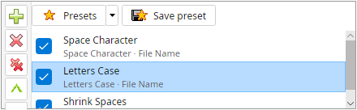

Magic File Renamer Help
Filter Chain

Filter Chain.
The Filter Chain (called Applied Filters in MFR 7) is the ordered list of filters that run on
the Rename List.
-
Add filters from Available Filters (double-click, Enter, or
Filters menu). Remove with Del or Filters → Remove selected filter.
-
Filters run top to bottom. Reorder with drag-and-drop,
Ctrl+↑ / Ctrl+↓, toolbar arrows, or the
Filters menu.
-
Each row shows the filter name and Apply To target. Open
Filter Options to change name, target, and whole / substring /
token scope.
-
Uncheck a step to disable it temporarily without removing it. Right-click for Check / Uncheck /
Invert all.
-
Selecting a step shows its editor in
Filter Configuration. Changes update the
preview when Auto-Preview is on.
-
Save Preset stores the current chain.
Load presets from the Presets drop-down or Preset Manager.
-
The status bar shows the filter count.